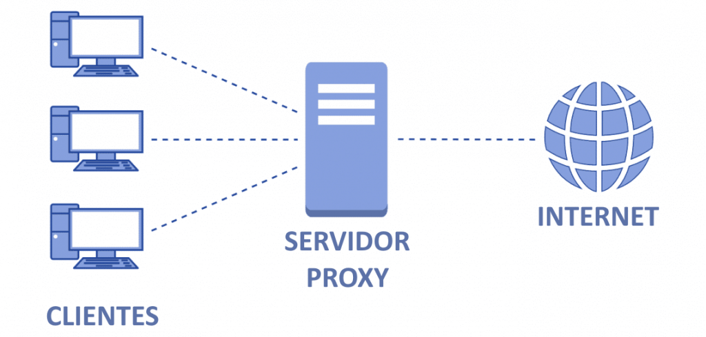
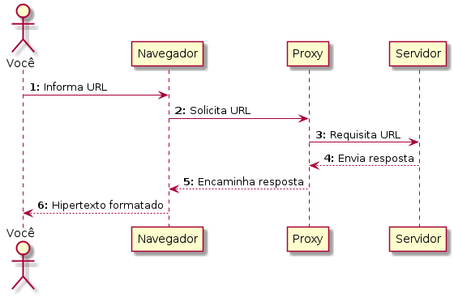
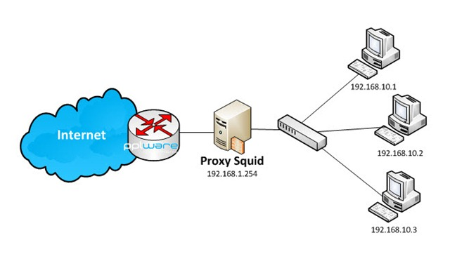

Proxy
O que é um proxy?
Resposta: é um procurador. No caso da Internet, o mais comum é um proxy HTTP, que serve de "procurador" para clientes HTTP (Exemplos: Chrome, Edge, Safari, Firefox).

Na figura acima  , vemos um esquema geral de como funciona uma rede com proxy para se comunicar à Internet.
, vemos um esquema geral de como funciona uma rede com proxy para se comunicar à Internet.

Na figura acima , vemos um diagrama com a sequência de passos que incluem:
- Entrada de uma URL pelo usuário
- Solicitação da URL feita do navegador para o servidor proxy
- Solicitação da URL feita do servidor proxy para o servidor web especificado pela URL
- Recebimento do objeto de resposta, do servidor web para o servidor proxy
- Encaminhamento do objeto do passo anterior, do servidor proxy para o navegador
- Formatação do hipertexto pelo navegador e exibição do objeto para o usuário

Na figura acima , temos um diagrama de redes com proxy, onde os equipamentos de rede que implementam a camada de rede estão identificados com seu respectivo endereço IPv4.
O servidor proxy mais comum é o Squid, sobre o qual trataremos nesta aula.